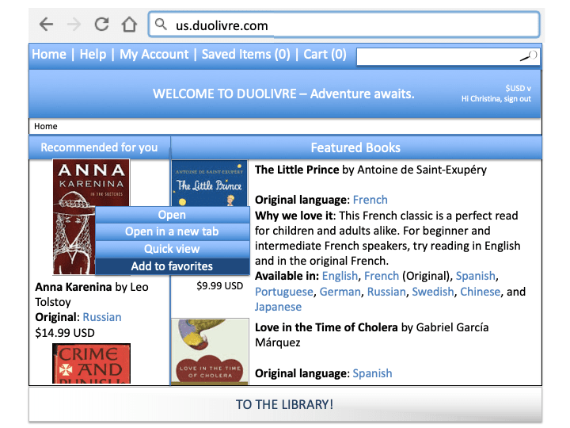
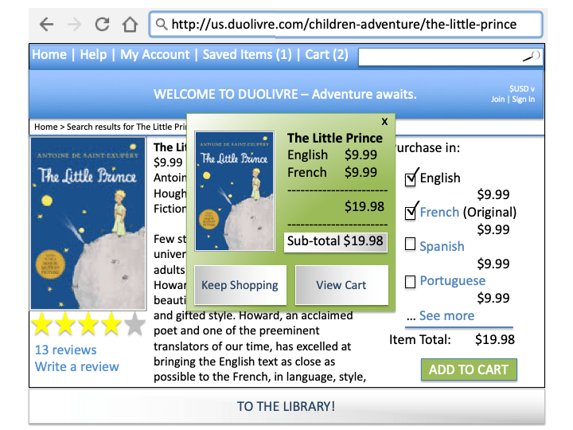

Please enjoy this first look at the DuoLivre product design!
(or return to xtinapark.com)
1
2
3
4
5
6
7
8
9
10

11
12
13
14
15
16
17
18
19
20
21
22
23
24
![A banner at the top of the page reads: 'Welcome to DuoLivre - Adventure awaits.'
A side bar reads 'Recommended for you' but leaves the suggestions blank. A subtitle
on the menu reads: 'Sign in to access this feature.' In the upper right corner of the page,
the user sees an option to Join or Sign In. The rest of the page shows a list of 'Featured Books.'
The first featured book is 'The Little Prince by Antoine de Saint-Exupéry.' Beneath the title of
this book, the user sees printed: 'Original language: French'; 'Why we love it: This French
classic is a perfect read for children and adults alike. For beginner and intermediate French
speakers, try reading in English and in the original French'; 'Available in: English, French (Original), Spanish, Portuguese, German, Russian, Swedish,
Chinese, and Japanese.' Beneath this we see another featured book: 'Love in the Time of Cholera
by Gabriel García Márquez'; 'Original Language: Spanish.'
At the very bottom of the page is a banner that reads: Sign in to Access Your Library!](Images/Slide25.png)
25
26

27
![We have been brought back to the main page, and we see that the user has successfully logged in.
In the upper right corner of the page where previously we saw 'Join' and 'Sign in' options, we now see
'Hi, Christina' and a 'Sign Out' option. Under the Recommended-for-you side-bar on the left side of the page,
we now see two book suggestions: 'Anna Karenina by Leo Tolstoy'; 'Original: Russian'; '$14.99 USD'
and 'Crime and Punishment by Fyodor Dostoyevsky.'
The banner at the bottom of the page reads: 'To the Library!'](Images/Slide28.png)
28
29

30
31
32
33
34
![The user selects 'The Little Prince by Antoine de Saint-Exupery' and is brought to
a page which displays an average rating of 4 out of 5 stars for the book, as well
as 13 reviews which the user could look over, and the option to Write a review.
A description of the book reads: 'Few stories are as widely read and as universally
cherished by children and adults alike as The Little Prince. Richard Howard’s
translation of the beloved classic beautifully reflects Saint Exupery’s unique and
gifted style. Howard, an acclaimed poet and one of the preeminent translators of
our time, has excelled at bringing the English text as close as possible to the
French, in language, style...'
The user is also presented with options to purchase the book in English, French (Original),
Spanish, Portuguese, or to expand the list to see more purchase options.
The user selects to purchase the book in English and French (Original), for $9.99 each,
for an item total of $19.98. In the bottom right-hand side of the page is a button
that reads: 'Add to Cart.'](Images/Slide35.png)
35

36
37